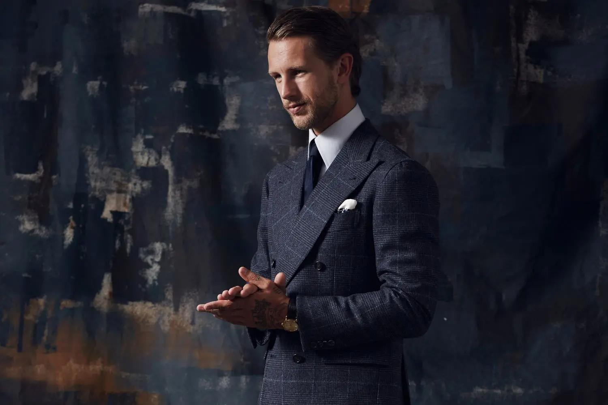

Ratgeber
Ausgabe Zürich
Ausgabe Zürich
Ein Ratgeber von The Sartorialist Zürich
Der passende Anzug
Anlass, Schnitt, Stoff und Details — wie Sie den Anzug wählen, der zu Ihnen und zu Ihrem Moment passt.
AnlassDresscodeFigurStoffDetails
Kuttelgasse 7 · 8001 Zürichthesartorialist.ch